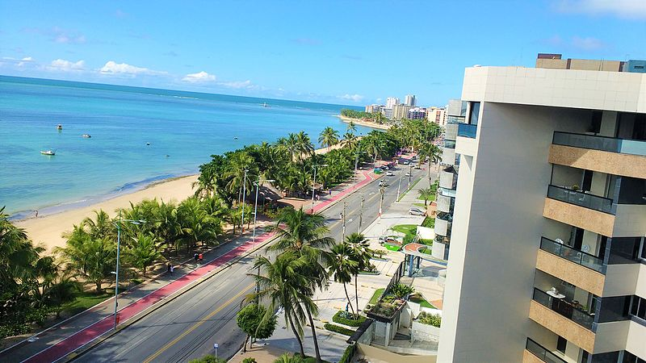
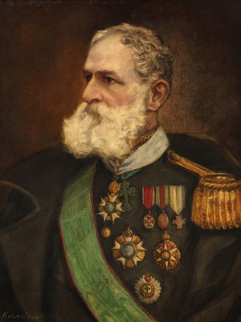

CURIOSIDADES:
O latim lacus, "tanque, lago" é a fonte, no acervo vocabular primitivo, do português, espanhol e italiano lago[8] e do francês lac;[9] um seu derivado, o latim lacuna, "fojo, buraco", "falta, carência, omissão", explica o espanhol e italiano laguna.[10][11] O português "lagoa",[8] coincidente com a variante espanhola lagona e o mirandês llagona, supõe mudança de sufixo,[12] documentada já em 938 num documento de Valencia, sob a grafia lacona,[8] e noutro de 1094, de Sahagún, sob a grafia lagona.[8] Sob a grafia "lagona" (talvez "lagõna"), é documentado no século XIV,[8] tendo alternado com a forma "lago" por longo tempo. Já a prótese (incorporação do artigo "a", formando "alagoa") ocorreu sobretudo a partir de locuções ("na lagoa", "vindo da lagoa")[8] ou por regularização morfológica com os derivados do verbo "alagar" ("alagadiço", "alagado", "alagador", "alagamento" etc.).[8] O dicionário Aurélio registra "alagoa" como uma variação de "lagoa".
O movimento republicano, intensificado pela abolição, traduziu-se nas atividades da imprensa e clubes de propaganda. O mais importante destes foi o Centro Republicano Federalista, também, de certo, o mais antigo; outros foram o Clube Federal Republicano e o Clube Centro Popular Republicano Maceioense, ambos existentes na capital no momento da proclamação. No interior havia igualmente outros clubes de propaganda. O Gutenberg era o órgão de imprensa mais veemente na difusão da ideia republicana.[54]
No mesmo dia em que, no Rio de Janeiro, era proclamada a república, em Maceió assumia a presidência o dr. Pedro Ribeiro Moreira, último delegado do governo imperial para a província. Confirmada a mudança do regime, organizou-se a princípio uma junta governativa, mas a 19 de novembro o marechal Deodoro designou o irmão, Pedro Paulino da Fonseca, para governar o novo estado.[54] Foi ele também o primeiro governador eleito após promulgada a constituição estadual, em 12 de junho de 1891.[